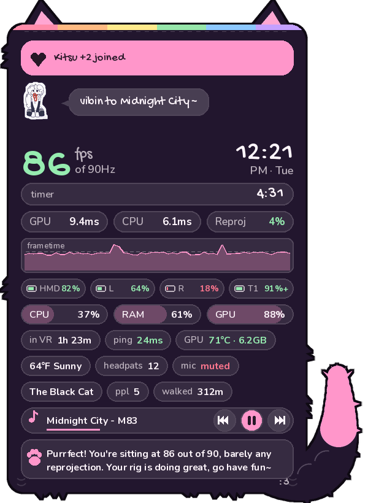
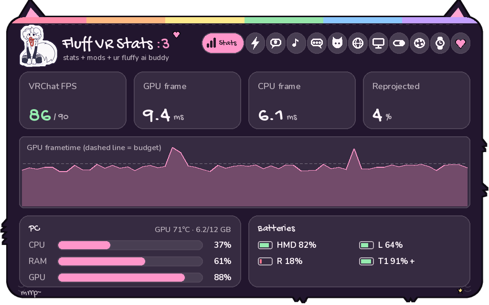
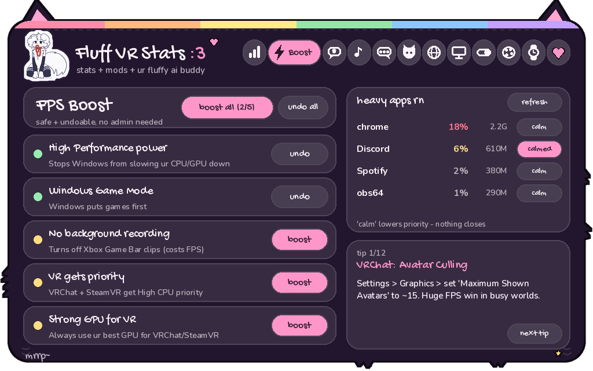
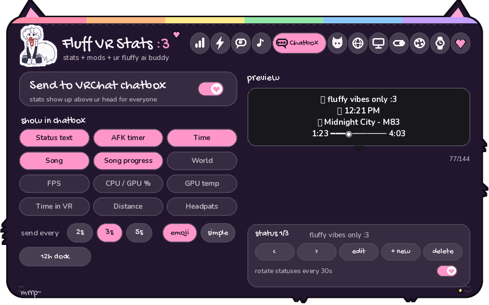
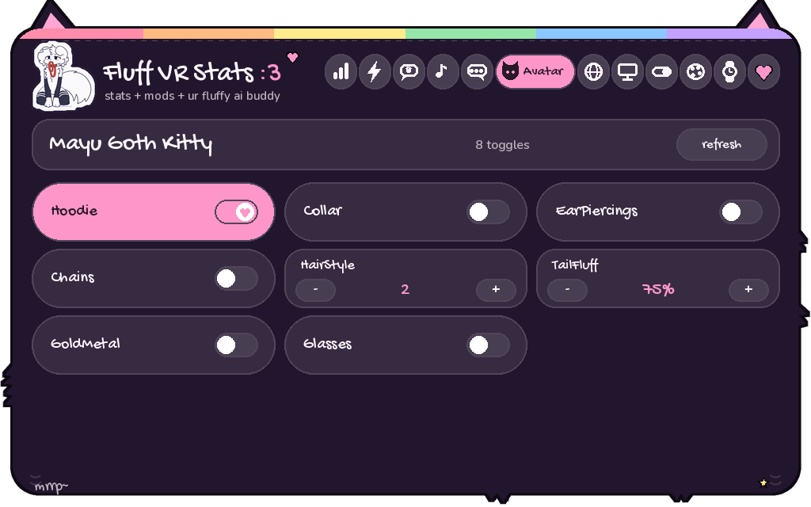
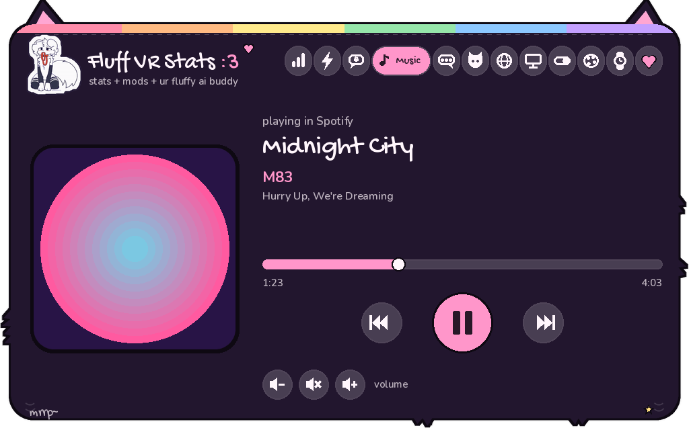
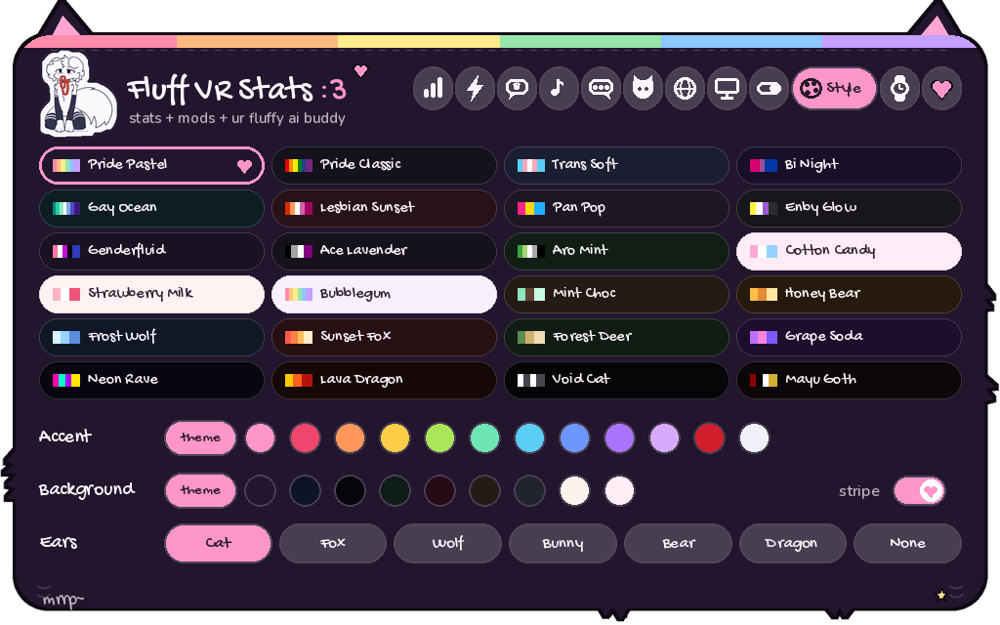

a cute furry overlay for SteamVR + VRChat
Windows · SteamVR · open source (MIT) · no mods or injection, safe with EAC

Your stats live on your wrist inside cute hand-drawn panels with ears and a fluffy tail. A whole menu waits in your SteamVR dashboard. Fluff, your AI buddy, is always there to chat.
even the error screen is cute. (it never crashes btw)
FPS, frame times, reprojection, batteries and PC load. Fades in when you look.
One-tap safe PC tweaks for VR. Everything's undoable, no admin needed.
Chat with Fluff in VR. Works free with Groq.
Album art + controls, plus buttons on your wrist that you tap with your other hand.
MagicChatbox-style status, song, time, world & more in the VRChat chatbox.
Your avatar's toggles as buttons, read automatically from VRChat.
World, instance, who's here, plus "Kitsu joined" popups on your wrist.
A tiny buddy on your wrist. Sleeps when you're AFK, vibes to music, loves headpats.
Pride flags, pastels, goth, neon... plus 7 ear styles: cat, fox, wolf, bunny, bear, dragon.






install.bat.setup_ai.bat to connect Fluff's AI. Groq is free.run.bat, put your headset on, and look at your wrist :3In VRChat, turn on OSC (Action Menu → Options → OSC → Enabled) for the chatbox, avatar toggles and headpats.
Yes. It's a separate SteamVR overlay app. It never touches VRChat's files or memory and talks to VRChat only through official OSC.
Barely. The wrist HUD redraws twice a second, the menu only redraws while it's open, and it runs at low CPU priority. The Boost tab can raise your FPS.
With Groq, yes: free with no card needed. You can also use Claude, OpenAI, or a local model.
Only your AI chats, sent to the provider you choose, plus weather/ping if you turn them on. World and player info is read from VRChat's own log file on your PC.
Yes! It's open source. Add a theme with one line in themes.py, and pull requests are welcome.